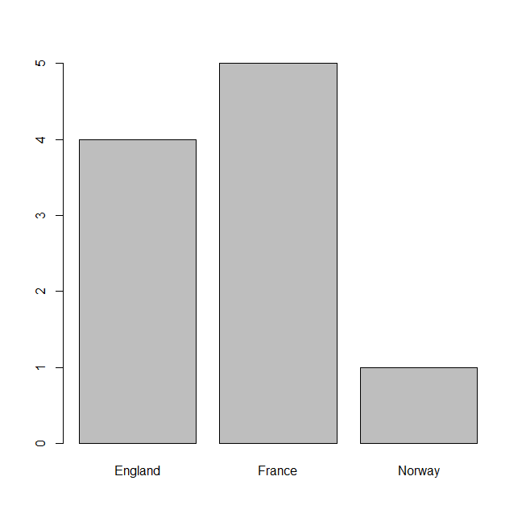
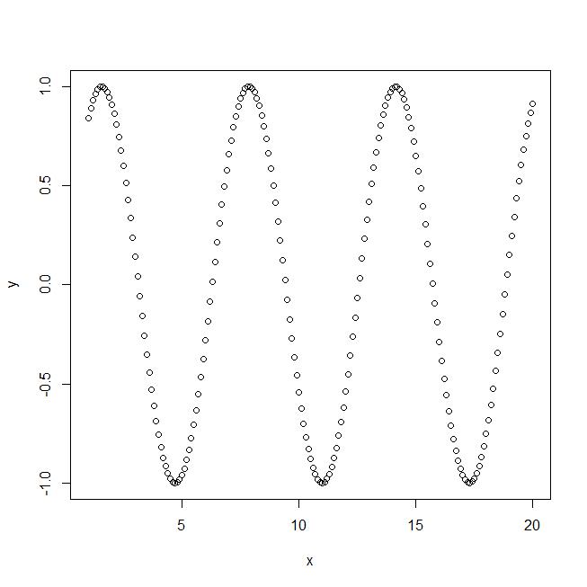

<a href = http://tryr.codeschool.com/>Code School - tryR</a>
<a href = https://github.com/CSCSandbox/tryRnote/> See Source </a>
</br>
<a href = "chapter1.R">chapter 1</a>
</br>
<a href = "chapter2.R">chapter 2</a>
單一向量視覺化成果</br>
</br>
兩向量視覺化成果</br>

